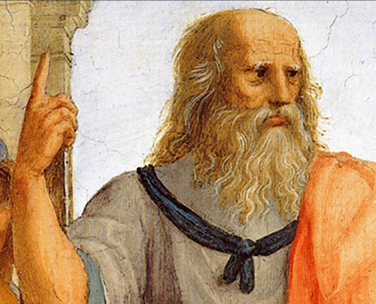

Desde siempre, la enseñanza del lenguaje (lengua) ha sido el tema más importante de la escolarización del estudiantado del Ecuador. Esta situación no ha cambiado, lo que se modificó es el enfoque que se le da a la enseñanza de la lengua. Es imperativo, entonces, re-significar en la actualidad lo que se entiende por la enseñanza y aprendizaje de esta área específica. Así mismo, es necesario, junto con la re-significación del enfoque del área, cambiar el nombre de la materia. En este fortalecimiento, se ha categorizado a la Literatura como un arte que posee sus propias características y una función específica diferente. La Literatura es una fuente de disfrute, de conocimientos a través de una mirada estética, de juego con el lenguaje, de valoración de aspectos verbales en circunstancias concretas y debe respetarse desde esta perspectiva.
Filosofía

Desde un punto de vista contemporáneo, la filosofía es una especie de ciencia madre de la cual
se desprenden casi todas las disciplinas especializadas que hoy en día conocemos. Centra sus
intereses en la reflexión, específicamente sobre temas como la moral, la belleza, la
experiencia, el lenguaje y la existencia misma.Su nombre proviene de los vocablos griegos filein
(“amar”) y sofía (“sabiduría”), tendríamos que concluir que se trata del amor al saber, de la
pasión por comprender, o algo semejante.Es imposible comprender qué cosa es la filosofía sin
tomar en consideración sus orígenes, su historia particular y el lugar que aún ocupa en el mundo
contemporáneo.
Ciencias Naturales
Las ciencias naturales (también ciencias de la naturaleza, ciencias físico-naturales o ciencias experimentales) son aquellas disciplinas de estudio que se interesan por comprender las leyes que rigen la naturaleza, y que lo hacen conforme al método científico y al método experimental. Para su desarrollo, aplicación y la realización de estudios, las ciencias naturales se apoyan en la lógica, el razonamiento y las metodologías existentes propias del método científico, incluyendo, cuando es necesario desarrollos prácticos.
Matemática
La matemática es una ciencia lógica deductiva, que utiliza símbolos para generar una teoría exacta de deducción e inferencia basada en definiciones, axiomas, postulados y reglas que transforman elementos primitivos en relaciones y teoremas más complejos. Esta ciencia enseña al individuo a pensar de una manera lógica y por lo tanto a desarrollar habilidades a resolver problemas y tomar decisiones. Las habilidades numéricas son valoradas por la mayoría de los sectores, se puede decir que en algunos casos son considerados esenciales.